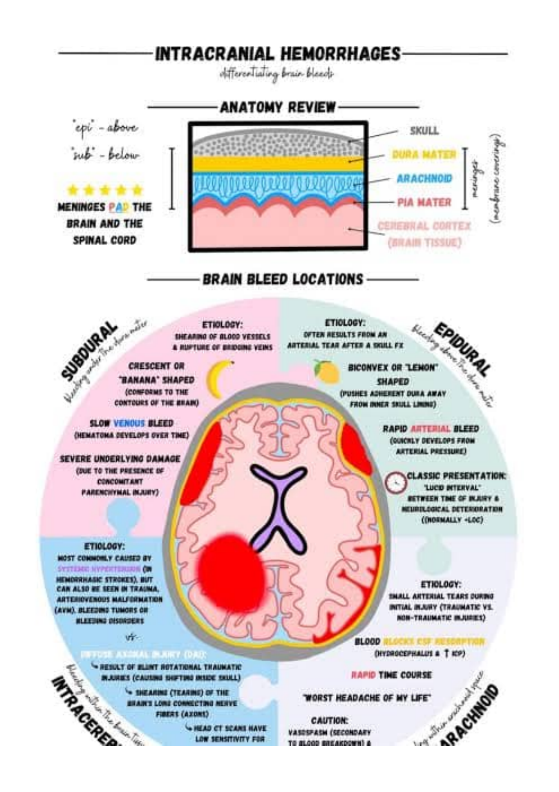
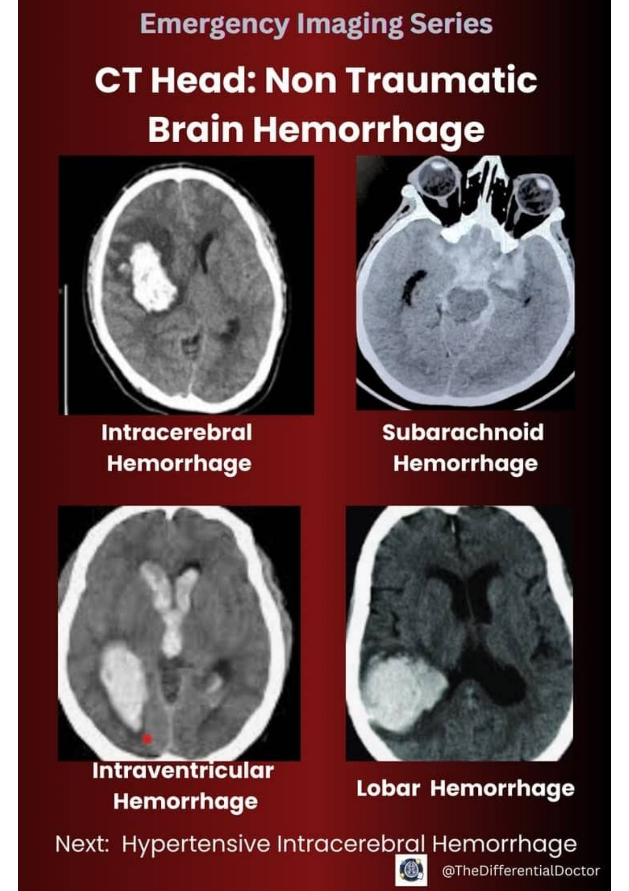
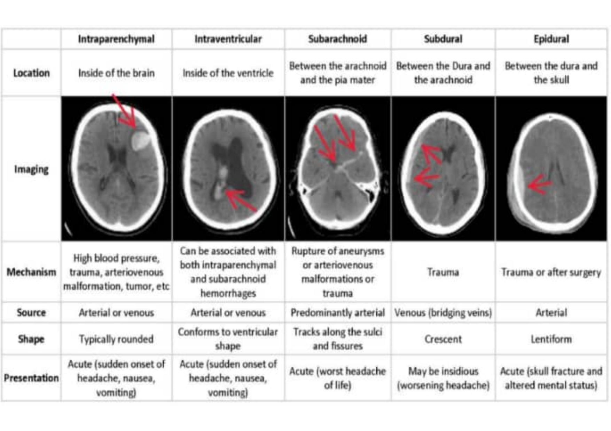
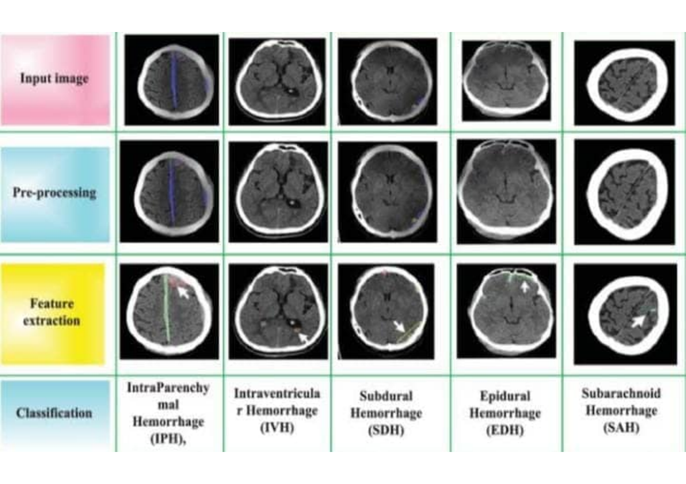

EXHIBIT #01
INITIALIZING CASE FILE...
BIOMETRIC SCAN IN PROGRESS
Intracranial hemorrhage (ICH) refers to any bleeding within the cranial vault — including the brain parenchyma, ventricles, and surrounding meningeal spaces. It constitutes a neurosurgical emergency demanding rapid radiological classification.
Primary causes include hypertensive vessel rupture, trauma, aneurysmal rupture, arteriovenous malformations (AVM), coagulopathy, and hemorrhagic transformation of ischemic infarction. Mechanism determines subtype classification.
Extravasated blood creates a hyperdense collection on non-contrast CT within 1–3 hours. Hematoma expansion occurs in 30–40% of patients within the first 24 hours, correlating with neurological deterioration.
Mortality ranges from 35–52% at 30 days depending on GCS score, hemorrhage volume, location, and IVH extension. The 30-day "spot sign" on CTA predicts hematoma growth with high specificity.
Radiological exhibits catalogued under Chain of Custody Protocol. All images obtained via non-contrast CT head.




Based on analysis of all submitted radiological exhibits, intracranial hemorrhage subtypes demonstrate characteristic CT signatures enabling definitive classification. Early identification and subtype differentiation are critical determinants of patient outcome. Case evidence supports immediate neurosurgical consultation protocol.